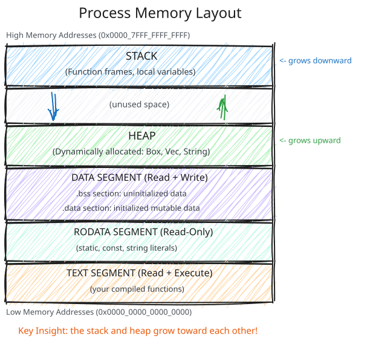
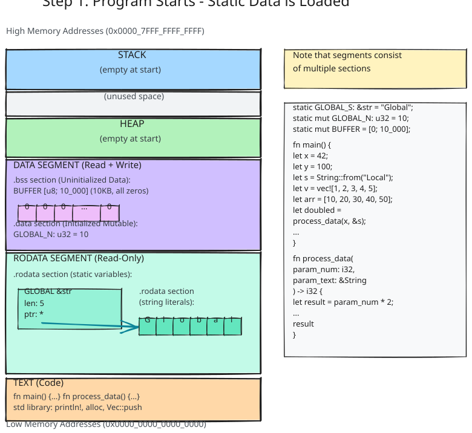
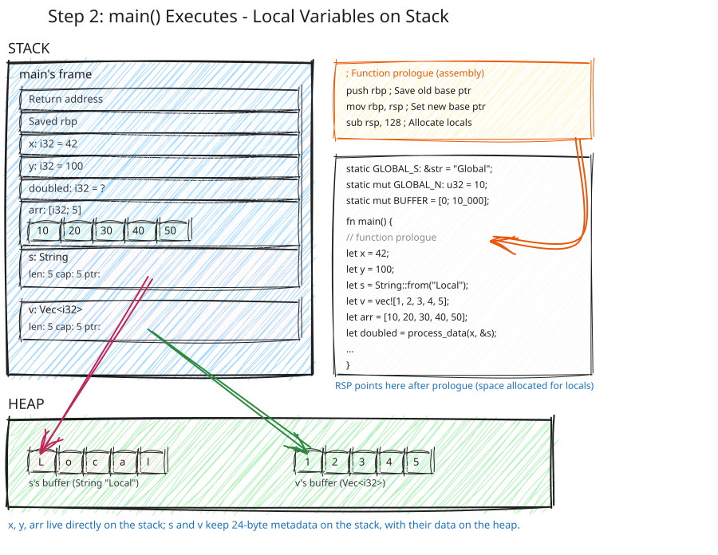
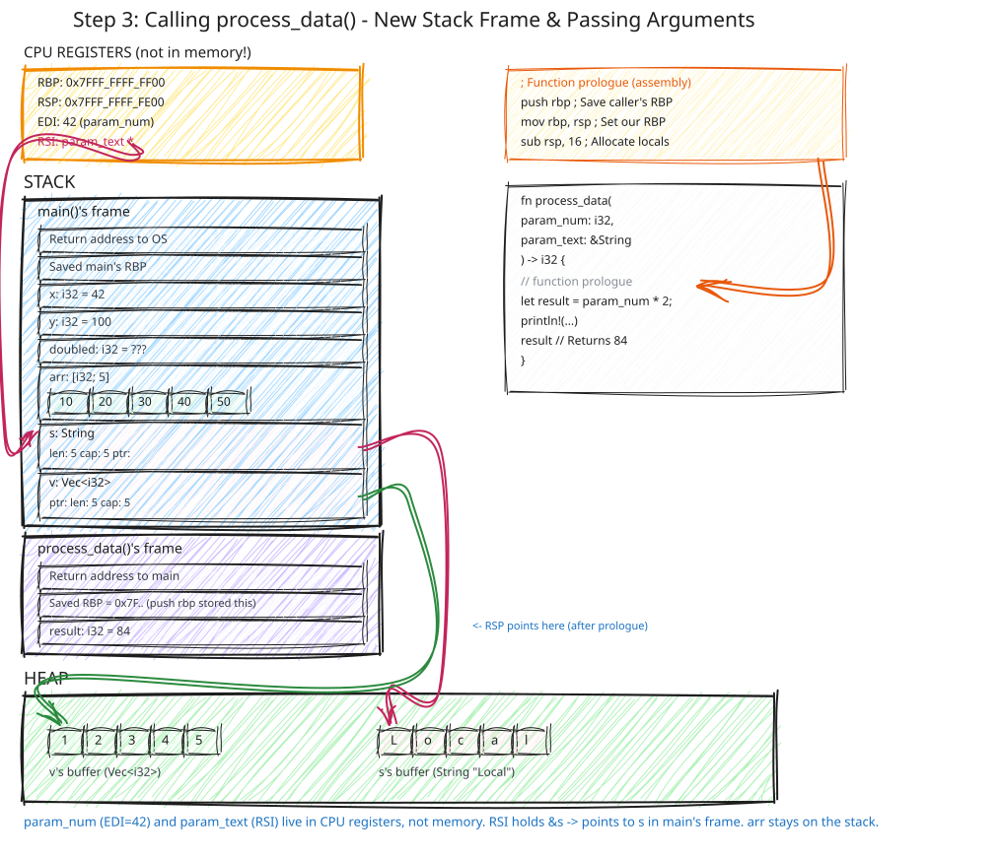
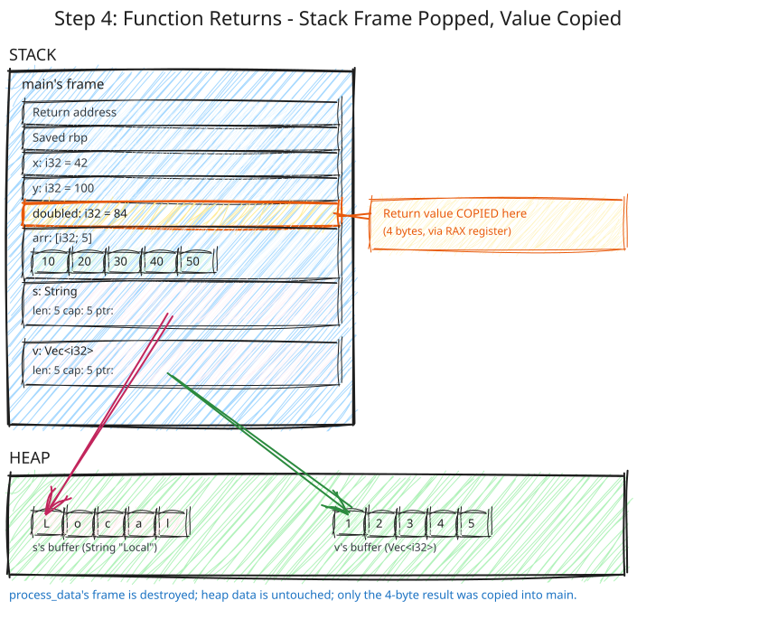

Appendix: Memory Layout - Where Your Data Lives
This document demystifies where your Rust data actually lives in memory. We’ll visualize the process memory layout and understand the stack, heap, and static data segments.
Recommended resource: cheats.rs/#memory-layout provides excellent visual memory layouts for Rust types.
The Simple Program
Let’s start with a concrete Rust program and trace where everything lives:
// Global/static data - lives in data segment
static GLOBAL_S: &str = "Global";
static mut GLOBAL_N: u32 = 10;
static mut BUFFER: [u8; 10_000] = [0; 10_000]; // 10 KB zero-initialized
fn main() {
// Stack: local variables
let x = 42;
let y = 100;
// Stack: String struct (24 bytes: ptr + len + cap)
// Heap: actual string data "Local"
let s = String::from("Local");
// Stack: vector struct (24 bytes: ptr + len + cap)
// Heap: array data [1, 2, 3, 4, 5]
let v = vec![1, 2, 3, 4, 5];
// Stack: native array - all data lives on stack (20 bytes)
let arr = [10, 20, 30, 40, 50];
// Stack: function call frame
// Passing by value (x) and by reference (&s)
let doubled = process_data(x, &s);
println!("{} -> {}", x, doubled);
}
fn process_data(param_num: i32, param_text: &String) -> i32 {
// Stack: new function frame
// Arguments passed:
// - param_num: COPY of x's value (42) - passed by value
// - param_text: pointer to s (on stack) - passed by reference
let result = param_num * 2;
println!("{}: {}", param_text, result);
// Return: result is COPIED to caller's stack frame
result // Returns 84
}Now let’s see where each piece of data lives in memory.
Process Memory Layout
When your Rust program runs, the operating system gives it a contiguous chunk of virtual memory organized into distinct regions:

Key Insight: The stack and heap grow toward each other!
Let’s Trace Our Program
Now let’s see exactly where each piece of data from our example lives.
Step 1: Program Starts - Static Data is Loaded
Before main() even runs, the OS loads static data into the DATA segment:

Step 2: main() Executes - Local Variables on Stack
When main() is called, the function’s prologue (compiler-generated instructions at the beginning of the function) creates a stack frame by adjusting the stack pointer (typically sub rsp, N where N is the size needed for local variables). After all local variables are initialized (right before calling process_data(x, &s)), the stack looks like this:

Important observations:
xandyare just 4 bytes each, living directly on the stacks(String) is 24 bytes on the stack (metadata: pointer, length, capacity)- The actual string data “Local” lives on the heap
v(Vec) is 24 bytes on the stack (metadata: pointer, length, capacity)- The actual array data [1,2,3,4,5] lives on the heap
arr(native array) is 20 bytes entirely on the stack (no heap allocation!)- All 5 integers live directly in the array, no pointer indirection
Step 3: Calling process_data() - New Stack Frame and Passing Arguments
When we call process_data(x, &s), here’s what the CPU actually does (x86-64 calling convention):
- Arguments loaded into registers (not pushed to stack!):
x(i32, 4 bytes): Loaded intoEDIregister → becomesparam_num&s(&String, 8 bytes): Pointer loaded intoRSIregister → becomesparam_text- There is no param_num or param_text in memory - they ARE the registers themselves
- CALL instruction executes: Pushes return address onto stack, then jumps to process_data
- Callee (process_data) sets up its stack frame:
- Saves registers if needed
- Allocates space for local variables
- May spill register arguments to stack (compiler’s choice)

Key observations about arguments and returns:**
-
param_numandparam_textare in CPU REGISTERS, not in memory!param_num(value 42) lives in the EDI registerparam_text(pointer to s) lives in the RSI register- They are NOT stored on the stack (unless the compiler decides to spill them later)
-
Pass by value vs by reference both use registers:
- Pass by value (
x): The value 42 is copied into EDI register - Pass by reference (
&s): The pointer to s (address on stack) is copied into RSI register
- Pass by value (
-
doubledvariable in main’s frame has space allocated but isn’t set yet - it will receive the return value -
Stack frames stack up - process_data’s frame sits on top of main’s frame
-
The heap data doesn’t move - only stack frames are created/destroyed
-
arrstays on the stack in main’s frame - native arrays don’t involve heap
How arguments are actually passed (x86-64 System V ABI):
; Conceptual assembly for: let doubled = process_data(x, &s);
mov edi, DWORD PTR [rbp-4] ; Load x (42), located at rbp-4 into EDI register
lea rsi, [rbp-32] ; Load address of s into RSI register (pointer to s on stack)
call process_data ; CALL pushes return address, jumps to function
Inside process_data
; Arguments are in registers: EDI = 42, RSI = pointer to s
; Function prologue - setting up stack frame:
push rbp ; Save caller's base pointer
mov rbp, rsp ; Set up our base pointer
sub rsp, 16 ; Allocate space for local variables (result, etc.)
; Now we can execute the function body:
; let result = param_num * 2;
mov eax, edi ; Load param_num (42) into EAX
shl eax, 1 ; Multiply by 2 (shift left) -> EAX = 84
mov DWORD PTR [rbp-4], eax ; Store result on stack
; ... println! call happens here ...
; Return preparation:
mov eax, DWORD PTR [rbp-4] ; Load result (84) into EAX (return register)
; Function epilogue - cleanup:
add rsp, 16 ; Deallocate local variables
pop rbp ; Restore caller's base pointer
ret ; Return to caller (pops return address, jumps back)
Key points:
-
Arguments go into registers first (not pushed to stack):
- First 6 integer/pointer arguments use: RDI, RSI, RDX, RCX, R8, R9
- Our i32 uses EDI (lower 32 bits of RDI)
- Our &String uses RSI (just a single pointer, 8 bytes)
-
CALL instruction pushes return address onto stack automatically
-
Compiler may spill to stack if:
- Register needed for other operations
- Function has too many arguments (7+ integers)
- Debugging is enabled (makes variables inspectable)
-
Pass by value vs by reference both use registers - the difference is what’s copied:
- By value (
x): The actual value (42) is copied into EDI - By reference (
&s): Only the pointer to s (8 bytes) is copied into RSI, pointing to s on the stack
- By value (
Step 4: process_data() Returns - Value Copied Back and Stack Frame Destroyed
When process_data() returns, two things happen:
- Return value is copied: The value in
result(84) is copied todoubledin main’s frame (using CPU register or direct memory copy) - Stack frame is popped: process_data’s entire frame is destroyed

Key observations about returns:
- Return value is copied: The 4 bytes of
resultare copied (typically via CPU register likeRAXon x86-64, then to stack) - process_data’s stack frame is gone: All local variables (param_num, param_text, result) are destroyed
- The heap data remains untouched: Only stack frames change, heap is unaffected
- doubled now has the value 84: Ready to be used by main
How return values work:
- Small values (like i32, 4 bytes): Returned via CPU register (RAX on x86-64), then copied to destination
- Larger values (like structs): Caller pre-allocates space, callee writes directly to it
- Owned heap types (like Vec, String): Only the metadata is copied (24 bytes), heap data stays put
Step 5: main() Ends - Cleanup
When main() returns, s and v go out of scope. Their Drop implementations run:
sis dropped: Callsdealloc()to free the heap memoryvis dropped: Callsdealloc()to free the heap memory- main’s stack frame is popped: All local variables disappear